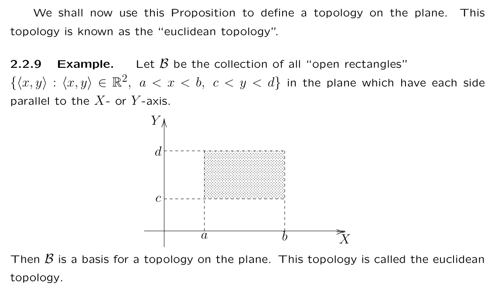

Experiment: Skimming a textbook, aiming for speed and definition. I don't care about doing practice problems. I want to eat the intuitions and the models and the formal ideas.
I didn't actually do a very good job skimming, I just kind of messed around for maybe a couple hours — max two or something like that. It's fine, though — it was still fun and valuable.
A topology for a set $X$ is a set $\tau$ of subsets of $X$ such that 1. the whole set $X$ and the empty set both belong to $\tau$ 2. any union of the sets in $\tau$ belongs to $\tau$ 3. any intersection of the sets in $\tau$ is in $\tau$
We call it a topological space if we hold the pair together $(X, \tau)$. The members of $\tau$ are open sets.
A subset is closed in the topology $(X, \tau)$ if $X \setminus S$ is open. The textbook says that this notation is derived from open and closed intervals; a subset is open if it's fully contained in the set, and closed if the a set of $X$ except it is in the set. A subset is clopen if it's both open and closed. (e.g. for $(X, \tau)$, $X$ and $\emptyset$ will always be clopen; they are complements)
Seems like a strange definition and doesn't intuitively connect to geometry.
Interesting: if you define $\tau_4$ as the set containing $\mathbb{N}$, $\emptyset$, and all finite subsets of $\mathbb{N}$, $\tau_4$ is not a subset of $\mathbb{N}$ because it doesn't contain all the infinite subsets of $\mathbb{N}$.
We call it a discrete topology if $\tau$ is the collection of all subsets of $X$.
We call it an indiscrete topology if $\tau$ is just ${X, \emptyset}$ - Aye, it's still a topology — the only intersections and unions you can define are the set with the empty set.
Some notes on Sets and such:
skipping finite-closed topology and inverse, inverse mapping
The euclidean topology on the real numbers is pretty important, apparently.
We call $S$ open in the euclidean topology on $\mathbb{R}$ if, for each member $x$ of $S$, there exists an interval $(a,b)$ (where $a<B$) such that $x \in (a,b) \subseteq S$. For each member of a given subset, there's an interval which constitutes a subset of $S$ that contains it.
I don't really get this right now. I can come back to it. The proof seems important.
A collection $\mathcal{B}$ of open subsets of $X$ is the basis for the topological space $(X, \tau)$ if every open set is a union of members of $\mathcal{B}$.
$\mathcal{B}$ must have the following properties:
Examples of bases
There can be multiple bases for the same topology. If $\mathcal{B}$ is a basis for a topology on $X$, then a superset of $\mathcal{B}$ in $\tau$ will be a basis as well.

Now this starts to get us into geometry. You can generalize this to higher dimensions relatively easily.
I don't understand this definition unfortunately. Where do the bounds on $a$, $b$, $c$, and $d$ come from?
Anyway, you use limit points to define density. Limit points seem interesting.
Then you get into neighborhoods — $N$ is a neighborhood of a point $p \in N$ if there's an open set $U$ such that $p \in U \subseteq N$. (doesn't make sense to me right now but that's fine; I just want to see where this textbook is going).
Interesting vocabulary: topo space is connected if the only clopen subsets of $X$ are $X$ and $\emptyset$.
Homeomorphism (p 96); any topological space homeomorphic to a connected space is connected. Function is continuous [epsilon-delta definition] → need to come up with different definitions that work for this
Then you reconstruct the intermediate value theorem. A fixed point is a point such that after a continuous mapping of something onto itself the point maps onto itself. Some stuff about metric spaces. Redefinition of monotonic sequences. Contraction mappings. Mean value theorem. Okay, I ran out of steam around chapter 7.
Topology has been used to study various biological systems including molecules and nanostructure (e.g., membraneous objects). In particular, circuit topology and knot theory have been extensively applied to classify and compare the topology of folded proteins and nucleic acids. Circuit topology classifies folded molecular chains based on the pairwise arrangement of their intra-chain contacts and chain crossings. Knot theory, a branch of topology, is used in biology to study the effects of certain enzymes on DNA. These enzymes cut, twist, and reconnect the DNA, causing knotting with observable effects such as slower electrophoresis.[18]
Chapter 9: space filling curves! :D Look into works by people named Bernoulli, the name keeps coming up